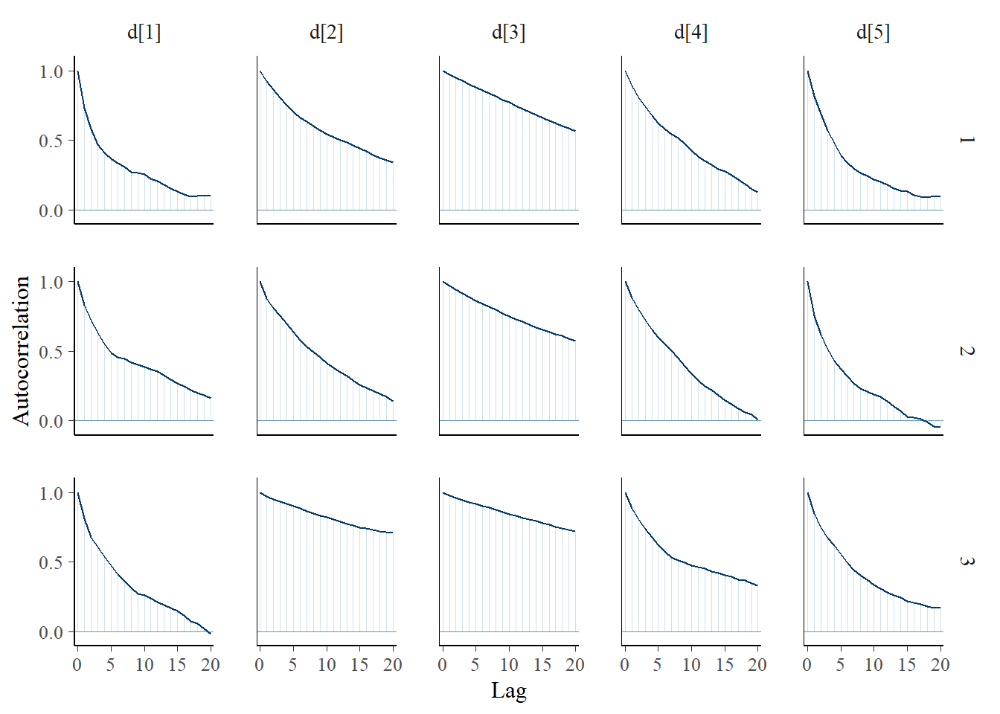
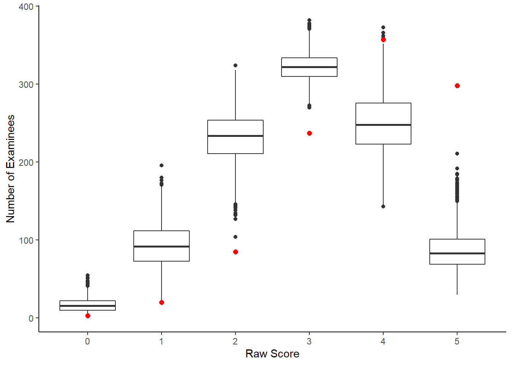

11.2 3-PL LSAT Example
In the Law School Admission Test (LSAT) example (p. 263-271), the data are from 1000 examinees responding to five items which is just a subset of the LSAT. We hypothesize that only one underlying latent variable is measured by these items. But that guessing is also plausible. The full 3-PL model we will use can be described in an equation as \[p(\boldsymbol{\theta}, \boldsymbol{d}, \boldsymbol{a}, \boldsymbol{c} \mid \mathbf{x}) \propto \prod_{i=1}^n\prod_{j=1}^Jp(\theta_i\mid\theta_i, d_j, a_j, c_j)p(\theta_i)p(d_j)p(a_j)p(c_j),\] where \[\begin{align*} x_{ij}\mid\theta_i\mid\theta_i, d_j, a_j, c_j &\sim \mathrm{Bernoulli}[p(\theta_i\mid\theta_i, d_j, a_j, c_j)],\ \mathrm{for}\ i=1, \cdots, 100,\ j = 1, \cdots, 5;\\ p(\theta_i\mid\theta_i, d_j, a_j, c_j) &= c_j + (1-c_j)\Phi(a_j\theta_j + d_j),\ \mathrm{for}\ i=1, \cdots, 100,\ j = 1, \cdots, 5;\\ \theta_i &\sim \mathrm{Normal}(0,1),\ \mathrm{for}\ i = 1, \cdots, 1000;\\ d_j &\sim \mathrm{Normal}(0, 2),\ \mathrm{for}\ j=1, \cdots, 5;\\ a_j &\sim \mathrm{Normal}^{+}(1, 2),\ \mathrm{for}\ j=1, \cdots, 5;\\ c_j &\sim \mathrm{Beta}(5, 17),\ \mathrm{for}\ j=1, \cdots, 5. \end{align*}\]
The above model can illustrated in a DAG as shown below.

Figure 11.1: DAG for 3-PL IRT model for LSAT Example
The path diagram for an IRT is essentially identical to the path diagram for a CFA model. This fact highlights an important feature of IRT/CFA in that the major conceptual difference between these approaches to is how we define the link between the latent variable the observed items.

Figure 11.2: Path diagram for 3-PL IRT model
For completeness, I have included the model specification diagram that more concretely connects the DAG and path diagram to the assumed distributions and priors.

Figure 11.3: Model specification diagram for the 3-PL IRT model
11.2.1 LSAT Example Using JAGS
jags.model.lsat <- function(){
#########################################
# Specify the item response measurement model for the observables
#########################################
for (i in 1:n){
for(j in 1:J){
P[i,j] <- c[j]+(1-c[j])*phi(a[j]*theta[i]+d[j]) # 3P-NO expression
x[i,j] ~ dbern(P[i,j]) # distribution for each observable
}
}
##########################################
# Specify the (prior) distribution for the latent variables
##########################################
for (i in 1:n){
theta[i] ~ dnorm(0, 1) # distribution for the latent variables
}
##########################################
# Specify the prior distribution for the measurement model parameters
##########################################
for(j in 1:J){
d[j] ~ dnorm(0, .5) # Locations for observables
a[j] ~ dnorm(1, .5); I(0,) # Discriminations for observables
c[j] ~ dbeta(5,17) # Lower asymptotes for observables
}
} # closes the model
# initial values
start_values <- list(
list("d"=c(1.00, 1.00, 1.00, 1.00, 1.00),
"a"=c(1.00, 1.00, 1.00, 1.00, 1.00),
"c"=c(0.20, 0.20, 0.20, 0.20, 0.20)),
list("d"=c(-3.00, -3.00, -3.00, -3.00, -3.00),
"a"=c(3.00, 3.00, 3.00, 3.00, 3.00),
"c"=c(0.50, 0.50, 0.50, 0.50, 0.50)),
list("d"=c(3.00, 3.00, 3.00, 3.00, 3.00),
"a"=c(0.1, 0.1, 0.1, 0.1, 0.1),
"c"=c(0.05, 0.05, 0.05, 0.05, 0.05))
)
# vector of all parameters to save
param_save <- c("a", "c", "d", "theta")
# dataset
dat <- read.table("data/LSAT.dat", header=T)
mydata <- list(
n = nrow(dat), J = ncol(dat),
x = as.matrix(dat)
)
# fit model
fit <- jags(
model.file=jags.model.lsat,
data=mydata,
inits=start_values,
parameters.to.save = param_save,
n.iter=2000,
n.burnin = 1000,
n.chains = 3,
progress.bar = "none")## Compiling model graph
## Resolving undeclared variables
## Allocating nodes
## Graph information:
## Observed stochastic nodes: 5000
## Unobserved stochastic nodes: 1015
## Total graph size: 31027
##
## Initializing modelprint(fit)## Inference for Bugs model at "C:/Users/noahp/AppData/Local/Temp/RtmpUNZc83/model3bfc26d0e73.txt", fit using jags,
## 3 chains, each with 2000 iterations (first 1000 discarded)
## n.sims = 3000 iterations saved
## mu.vect sd.vect 2.5% 25% 50% 75% 97.5% Rhat n.eff
## a[1] 0.481 0.183 0.185 0.348 0.464 0.585 0.886 1.012 340
## a[2] 0.567 0.201 0.273 0.434 0.533 0.654 1.087 1.014 170
## a[3] 1.431 1.005 0.515 0.805 1.079 1.550 4.373 1.644 7
## a[4] 0.497 0.180 0.230 0.381 0.469 0.579 0.933 1.037 120
## a[5] 0.429 0.162 0.164 0.317 0.407 0.517 0.814 1.018 160
## c[1] 0.241 0.090 0.092 0.175 0.233 0.298 0.434 1.001 3000
## c[2] 0.255 0.091 0.096 0.190 0.246 0.313 0.456 1.009 380
## c[3] 0.276 0.072 0.132 0.222 0.281 0.330 0.407 1.203 14
## c[4] 0.252 0.100 0.085 0.180 0.242 0.312 0.466 1.006 440
## c[5] 0.246 0.090 0.090 0.179 0.238 0.303 0.438 1.006 370
## d[1] 1.428 0.141 1.180 1.335 1.413 1.508 1.754 1.021 160
## d[2] 0.296 0.167 -0.127 0.217 0.319 0.411 0.539 1.015 1300
## d[3] -0.658 0.607 -2.430 -0.829 -0.463 -0.254 -0.036 1.695 7
## d[4] 0.513 0.168 0.153 0.439 0.541 0.620 0.745 1.073 170
## d[5] 1.026 0.118 0.781 0.952 1.030 1.105 1.258 1.009 270
## theta[1] -1.636 0.765 -3.267 -2.133 -1.589 -1.115 -0.194 1.001 3000
## theta[2] -1.641 0.762 -3.174 -2.157 -1.634 -1.118 -0.173 1.003 850
## theta[3] -1.643 0.775 -3.212 -2.152 -1.641 -1.095 -0.191 1.003 850
## theta[4] -1.290 0.743 -2.781 -1.773 -1.272 -0.767 0.115 1.001 3000
## theta[5] -1.310 0.753 -2.813 -1.810 -1.294 -0.799 0.151 1.001 3000
## theta[6] -1.287 0.775 -2.892 -1.792 -1.256 -0.752 0.127 1.001 3000
## theta[7] -1.283 0.747 -2.787 -1.783 -1.252 -0.767 0.132 1.001 3000
## theta[8] -1.256 0.759 -2.766 -1.749 -1.234 -0.730 0.206 1.001 3000
## theta[9] -1.289 0.771 -2.867 -1.815 -1.259 -0.749 0.220 1.002 1200
## theta[10] -1.305 0.762 -2.867 -1.813 -1.283 -0.807 0.161 1.002 1500
## theta[11] -1.305 0.775 -2.854 -1.820 -1.306 -0.767 0.194 1.001 3000
## theta[12] -0.927 0.784 -2.478 -1.442 -0.919 -0.387 0.574 1.003 790
## theta[13] -0.924 0.787 -2.549 -1.440 -0.897 -0.370 0.574 1.002 2900
## theta[14] -0.966 0.768 -2.502 -1.474 -0.956 -0.448 0.469 1.002 3000
## theta[15] -0.959 0.751 -2.509 -1.447 -0.935 -0.447 0.440 1.002 1900
## theta[16] -0.976 0.765 -2.471 -1.494 -0.964 -0.446 0.436 1.002 2100
## theta[17] -0.906 0.772 -2.486 -1.428 -0.888 -0.345 0.521 1.001 3000
## theta[18] -0.947 0.771 -2.550 -1.462 -0.930 -0.410 0.477 1.001 2000
## theta[19] -0.926 0.769 -2.454 -1.439 -0.910 -0.390 0.564 1.003 1100
## theta[20] -0.937 0.759 -2.457 -1.429 -0.916 -0.421 0.480 1.003 730
## theta[21] -0.960 0.766 -2.442 -1.486 -0.946 -0.439 0.462 1.002 1600
## theta[22] -0.938 0.784 -2.523 -1.476 -0.906 -0.378 0.495 1.001 3000
## theta[23] -1.431 0.839 -3.035 -1.985 -1.446 -0.870 0.264 1.007 320
## theta[24] -1.043 0.860 -2.696 -1.617 -1.045 -0.436 0.601 1.002 1000
## theta[25] -1.074 0.906 -2.840 -1.679 -1.063 -0.456 0.692 1.005 490
## theta[26] -1.058 0.899 -2.844 -1.653 -1.066 -0.447 0.714 1.004 580
## theta[27] -1.051 0.913 -2.795 -1.663 -1.038 -0.464 0.781 1.006 840
## theta[28] -0.586 0.899 -2.400 -1.215 -0.567 0.062 1.119 1.008 320
## theta[29] -0.580 0.882 -2.346 -1.177 -0.575 0.029 1.078 1.008 270
## theta[30] -0.571 0.899 -2.360 -1.207 -0.580 0.051 1.164 1.005 880
## theta[31] -0.585 0.911 -2.393 -1.194 -0.565 0.060 1.155 1.003 1000
## theta[32] -1.314 0.754 -2.865 -1.805 -1.294 -0.785 0.089 1.002 1300
## theta[33] -0.940 0.771 -2.505 -1.444 -0.908 -0.404 0.474 1.005 900
## theta[34] -0.926 0.775 -2.582 -1.421 -0.893 -0.401 0.500 1.004 570
## theta[35] -0.939 0.774 -2.485 -1.451 -0.907 -0.408 0.545 1.001 3000
## theta[36] -0.932 0.794 -2.542 -1.438 -0.909 -0.385 0.566 1.002 1400
## theta[37] -0.941 0.788 -2.612 -1.436 -0.929 -0.391 0.497 1.006 1900
## theta[38] -0.963 0.802 -2.673 -1.486 -0.942 -0.414 0.534 1.003 930
## theta[39] -0.972 0.780 -2.546 -1.487 -0.949 -0.427 0.459 1.002 1100
## theta[40] -0.971 0.781 -2.541 -1.486 -0.935 -0.450 0.470 1.001 3000
## theta[41] -0.589 0.778 -2.125 -1.091 -0.589 -0.081 0.920 1.003 3000
## theta[42] -0.597 0.801 -2.187 -1.122 -0.559 -0.058 0.889 1.005 530
## theta[43] -0.607 0.803 -2.329 -1.128 -0.570 -0.038 0.857 1.001 3000
## theta[44] -0.607 0.777 -2.222 -1.106 -0.576 -0.070 0.827 1.002 1100
## theta[45] -0.599 0.795 -2.231 -1.101 -0.576 -0.054 0.892 1.002 2800
## theta[46] -0.545 0.769 -2.075 -1.040 -0.523 -0.028 0.921 1.004 570
## theta[47] -0.582 0.765 -2.121 -1.093 -0.556 -0.047 0.838 1.003 3000
## theta[48] -0.579 0.813 -2.226 -1.109 -0.543 -0.007 0.895 1.002 1100
## theta[49] -0.581 0.760 -2.131 -1.069 -0.548 -0.072 0.810 1.003 820
## theta[50] -0.553 0.758 -2.180 -1.045 -0.527 -0.017 0.819 1.004 1300
## theta[51] -0.588 0.797 -2.182 -1.127 -0.550 -0.046 0.892 1.004 630
## theta[52] -0.586 0.778 -2.170 -1.098 -0.552 -0.050 0.874 1.001 3000
## theta[53] -0.599 0.774 -2.190 -1.100 -0.569 -0.050 0.785 1.008 250
## theta[54] -0.578 0.778 -2.109 -1.109 -0.540 -0.050 0.872 1.005 480
## theta[55] -0.563 0.796 -2.207 -1.073 -0.540 -0.029 0.922 1.005 810
## theta[56] -0.567 0.775 -2.071 -1.081 -0.572 -0.040 0.904 1.002 1900
## theta[57] -0.532 0.939 -2.479 -1.135 -0.505 0.122 1.253 1.006 560
## theta[58] -0.545 0.901 -2.328 -1.155 -0.524 0.077 1.203 1.002 1700
## theta[59] -0.558 0.917 -2.421 -1.169 -0.538 0.112 1.089 1.007 410
## theta[60] -0.605 0.917 -2.385 -1.224 -0.625 0.027 1.282 1.006 350
## theta[61] -0.562 0.912 -2.423 -1.166 -0.553 0.068 1.142 1.008 390
## theta[62] -0.090 0.929 -1.900 -0.711 -0.071 0.568 1.670 1.003 690
## theta[63] -0.047 0.932 -1.942 -0.664 -0.023 0.613 1.696 1.009 410
## theta[64] -0.051 0.916 -1.857 -0.658 -0.026 0.590 1.720 1.004 730
## theta[65] -0.013 0.889 -1.730 -0.618 0.006 0.590 1.710 1.002 1900
## theta[66] -0.023 0.924 -1.810 -0.656 -0.011 0.619 1.754 1.003 940
## theta[67] -0.051 0.926 -1.885 -0.669 -0.040 0.566 1.726 1.004 580
## theta[68] -0.013 0.910 -1.822 -0.613 0.007 0.610 1.656 1.007 640
## theta[69] -0.021 0.903 -1.843 -0.624 0.018 0.614 1.620 1.005 460
## theta[70] -0.055 0.911 -1.845 -0.691 -0.031 0.587 1.675 1.007 330
## theta[71] 0.022 0.907 -1.814 -0.585 0.070 0.649 1.672 1.003 1800
## theta[72] -0.059 0.907 -1.900 -0.657 -0.045 0.551 1.655 1.003 880
## theta[73] -0.034 0.922 -1.872 -0.659 0.006 0.603 1.726 1.002 1300
## theta[74] -0.037 0.933 -2.006 -0.634 0.003 0.626 1.652 1.006 910
## theta[75] -0.066 0.929 -1.878 -0.708 -0.050 0.595 1.726 1.006 400
## theta[76] -0.027 0.924 -1.875 -0.669 0.000 0.625 1.730 1.001 3000
## theta[77] -1.197 0.765 -2.697 -1.716 -1.178 -0.664 0.256 1.001 2800
## theta[78] -1.192 0.759 -2.738 -1.682 -1.194 -0.660 0.178 1.003 910
## theta[79] -1.165 0.722 -2.631 -1.641 -1.141 -0.669 0.195 1.005 460
## theta[80] -1.196 0.761 -2.728 -1.708 -1.186 -0.681 0.239 1.003 1400
## theta[81] -1.181 0.781 -2.726 -1.697 -1.186 -0.645 0.331 1.005 740
## theta[82] -1.207 0.760 -2.772 -1.700 -1.175 -0.695 0.211 1.005 900
## theta[83] -1.227 0.786 -2.797 -1.749 -1.217 -0.667 0.253 1.006 360
## theta[84] -1.203 0.754 -2.686 -1.717 -1.185 -0.676 0.262 1.001 3000
## theta[85] -1.203 0.761 -2.749 -1.683 -1.176 -0.678 0.231 1.002 2200
## theta[86] -1.181 0.769 -2.727 -1.680 -1.165 -0.638 0.274 1.005 410
## theta[87] -0.838 0.762 -2.405 -1.343 -0.802 -0.304 0.585 1.003 720
## theta[88] -0.825 0.741 -2.307 -1.335 -0.806 -0.315 0.539 1.001 3000
## theta[89] -0.835 0.766 -2.433 -1.351 -0.799 -0.297 0.570 1.001 2400
## theta[90] -0.872 0.750 -2.385 -1.378 -0.845 -0.342 0.535 1.002 3000
## theta[91] -0.843 0.792 -2.430 -1.375 -0.828 -0.294 0.637 1.004 630
## theta[92] -0.827 0.764 -2.415 -1.335 -0.804 -0.286 0.568 1.003 890
## theta[93] -0.815 0.764 -2.383 -1.312 -0.782 -0.294 0.656 1.006 610
## theta[94] -0.824 0.762 -2.372 -1.322 -0.806 -0.291 0.634 1.001 3000
## theta[95] -0.814 0.768 -2.368 -1.330 -0.800 -0.277 0.622 1.001 3000
## theta[96] -0.839 0.760 -2.364 -1.346 -0.817 -0.315 0.540 1.005 440
## [ reached getOption("max.print") -- omitted 905 rows ]
##
## For each parameter, n.eff is a crude measure of effective sample size,
## and Rhat is the potential scale reduction factor (at convergence, Rhat=1).
##
## DIC info (using the rule, pD = var(deviance)/2)
## pD = 2529.8 and DIC = 7045.2
## DIC is an estimate of expected predictive error (lower deviance is better).round(fit$BUGSoutput$summary[ !rownames(fit$BUGSoutput$summary) %like% "theta", ], 3)## mean sd 2.5% 25% 50% 75% 97.5% Rhat n.eff
## a[1] 0.481 0.183 0.185 0.348 0.464 0.585 0.886 1.012 340
## a[2] 0.567 0.201 0.273 0.434 0.533 0.654 1.087 1.014 170
## a[3] 1.431 1.005 0.515 0.805 1.079 1.550 4.373 1.644 7
## a[4] 0.497 0.180 0.230 0.381 0.469 0.579 0.933 1.037 120
## a[5] 0.429 0.162 0.164 0.317 0.407 0.517 0.814 1.018 160
## c[1] 0.241 0.090 0.092 0.175 0.233 0.298 0.434 1.001 3000
## c[2] 0.255 0.091 0.096 0.190 0.246 0.313 0.456 1.009 380
## c[3] 0.276 0.072 0.132 0.222 0.281 0.330 0.407 1.203 14
## c[4] 0.252 0.100 0.085 0.180 0.242 0.312 0.466 1.006 440
## c[5] 0.246 0.090 0.090 0.179 0.238 0.303 0.438 1.006 370
## d[1] 1.428 0.141 1.180 1.335 1.413 1.508 1.754 1.021 160
## d[2] 0.296 0.167 -0.127 0.217 0.319 0.411 0.539 1.015 1300
## d[3] -0.658 0.607 -2.430 -0.829 -0.463 -0.254 -0.036 1.695 7
## d[4] 0.513 0.168 0.153 0.439 0.541 0.620 0.745 1.073 170
## d[5] 1.026 0.118 0.781 0.952 1.030 1.105 1.258 1.009 270
## deviance 4515.381 76.491 4342.669 4467.976 4520.417 4569.522 4649.529 1.208 16# extract posteriors for all chains
jags.mcmc <- as.mcmc(fit)
# the below two plots are too big to be useful given the 1000 observations.
#R2jags::traceplot(jags.mcmc)
# gelman-rubin-brook
#gelman.plot(jags.mcmc)
# convert to single data.frame for density plot
a <- colnames(as.data.frame(jags.mcmc[[1]]))
plot.data <- data.frame(as.matrix(jags.mcmc, chains=T, iters = T))
colnames(plot.data) <- c("chain", "iter", a)
plot_title <- ggtitle("Posterior distributions",
"with medians and 80% intervals")
mcmc_areas(
plot.data,
pars = c(paste0("d[",1:5,"]")),
prob = 0.8) +
plot_title
mcmc_areas(
plot.data,
pars = c(paste0("a[", 1:5, "]")),
prob = 0.8) +
plot_title
mcmc_areas(
plot.data,
pars = c(paste0("c[", 1:5, "]")),
prob = 0.8) +
plot_title
11.2.1.1 Posterior Predicted Distributions
Here, we want to compare the observed and expected posterior predicted distributions.
Statistical functions of interest are the (1) standardized model-based covariance (SMBC) and (2) the standardized generalized discrepancy measure (SGDDM).
For (1), the SMBC is \[SMBC_{jj^\prime}=\frac{\frac{1}{n}\sum_{i=1}^n(x_{ij} - E(x_{ij} \mid \theta_i,\boldsymbol{\omega}_j))(x_{ij^\prime} - E(x_{ij^\prime} \mid \theta_i,\boldsymbol{\omega}_j^\prime))}{\sqrt{\frac{1}{n}\sum_{i=1}^n(x_{ij} - E(x_{ij} \mid \theta_i,\boldsymbol{\omega}_j))^2}\sqrt{\frac{1}{n}\sum_{i=1}^n(x_{ij^\prime} - E(x_{ij^\prime} \mid \theta_i,\boldsymbol{\omega}_j^\prime))}}\]
In R, the functions below can be used to compute these qualtities.
calculate.SGDDM <- function(data.matrix, expected.value.matrix){
J.local = ncol(data.matrix)
SMBC.matrix <- calculate.SMBC.matrix(data.matrix, expected.value.matrix)
SGDDM = sum(abs((lower.tri(SMBC.matrix, diag=FALSE))*SMBC.matrix))/((J.local*(J.local-1))/2)
SGDDM
} # closes calculate.SGDDM
calculate.SMBC.matrix <- function(data.matrix, expected.value.matrix){
N.local <- nrow(data.matrix)
MBC.matrix <- (t(data.matrix-expected.value.matrix) %*% (data.matrix-expected.value.matrix))/N.local
MBStddevs.matrix <- diag(sqrt(diag(MBC.matrix)))
#SMBC.matrix <- solve(MBStddevs.matrix) %*% MBC.matrix %*% solve(MBStddevs.matrix)
J.local <- ncol(data.matrix)
SMBC.matrix <- matrix(NA, nrow=J.local, ncol=J.local)
for(j in 1:J.local){
for(jj in 1:J.local){
SMBC.matrix[j,jj] <- MBC.matrix[j,jj]/(MBStddevs.matrix[j,j]*MBStddevs.matrix[jj,jj])
}
}
SMBC.matrix
} # closes calculate.MBC.matrixNext, we will use the functions above among other basic data wrangling to construct a full posterior predictive distribution analysis to probe our resulting posterior.
# Data wrangle the results/posterior draws for use
datv1 <- plot.data %>%
pivot_longer(
cols = `a[1]`:`a[5]`,
values_to = "a",
names_to = "item"
) %>%
mutate(item = substr(item, 3,3)) %>%
select(chain, iter, item, a)
datv2 <- plot.data %>%
pivot_longer(
cols = `c[1]`:`c[5]`,
values_to = "c",
names_to = "item"
) %>%
mutate(item = substr(item, 3,3)) %>%
select(chain, iter, item, c)
datv3 <- plot.data %>%
pivot_longer(
cols = `d[1]`:`d[5]`,
values_to = "d",
names_to = "item"
) %>%
mutate(item = substr(item, 3,3)) %>%
select(chain, iter, item, d)
datv4 <- plot.data %>%
pivot_longer(
cols = `theta[1]`:`theta[999]`,
values_to = "theta",
names_to = "person"
) %>%
select(chain, iter, person, theta)
dat_long <- full_join(datv1, datv2)## Joining, by = c("chain", "iter", "item")dat_long <- full_join(dat_long, datv3)## Joining, by = c("chain", "iter", "item")dat_long <- full_join(dat_long, datv4)## Joining, by = c("chain", "iter")dat1 <- dat
dat1$person <- paste0("theta[",1:nrow(dat), "]")
datvl <- dat1 %>%
pivot_longer(
cols=contains("item"),
names_to = "item",
values_to = "x"
) %>%
mutate(
item = substr(item, 6, 100)
)
dat_long <- left_join(dat_long, datvl)## Joining, by = c("item", "person")# compute expected prob
ilogit <- function(x){exp(x)/(1+exp(x))}
dat_long <- dat_long %>%
as_tibble()%>%
mutate(
x.exp = c + (1-c)*ilogit(a*(theta - d)),
x.dif = x - x.exp
)
dat_long$x.ppd <- apply(
dat_long, 1,
FUN=function(x){
rbern(1, as.numeric(x[10]))
}
)
# figure 11.4
d <- dat_long %>%
group_by(chain, iter, person) %>%
summarise(raw.score = sum(x),
raw.score.ppd = sum(x.ppd))## `summarise()` has grouped output by 'chain', 'iter'. You can override using the `.groups` argument.di <- d %>%
filter(chain==1, iter==1001) %>%
group_by(raw.score) %>%
summarise(count = n())
dii <- d %>%
group_by(chain, iter, raw.score.ppd)%>%
summarise(raw.score = n())## `summarise()` has grouped output by 'chain', 'iter'. You can override using the `.groups` argument.# overall fit of observed scores
ggplot()+
geom_boxplot(data=dii, aes(y=raw.score, x= raw.score.ppd, group=raw.score.ppd))+
geom_point(data=di, aes(x=raw.score, y=count), color="red", size=2)+
labs(x="Raw Score", y="Number of Examinees")+
scale_x_continuous(breaks=0:5)+
theme_classic()
# by item
d <- dat_long %>%
group_by(chain, iter, person) %>%
mutate(raw.score = sum(x),
raw.score.ppd = sum(x.ppd))
di <- d %>%
filter(chain==1, iter==1001) %>%
group_by(raw.score, item) %>%
summarise(p.correct = mean(x))## `summarise()` has grouped output by 'raw.score'. You can override using the `.groups` argument.dii <- d %>%
group_by(chain, iter, raw.score.ppd, item)%>%
summarise(p.correct = mean(x.ppd))## `summarise()` has grouped output by 'chain', 'iter', 'raw.score.ppd'. You can override using the `.groups` argument.ggplot()+
geom_boxplot(data=dii,
aes(y= p.correct,
x= raw.score.ppd,
group=raw.score.ppd))+
geom_point(data=di,
aes(x=raw.score, y=p.correct),
color="red", size=2)+
facet_wrap(.~item)+
labs(x="Raw Score", y="Number of Examinees")+
theme_classic()
# computing standardized model summary statistics
# objects for results
J <- 5
n.chain <- 3
n.iters <- 1000
n.iters.PPMC <- n.iters*n.chain
realized.SMBC.array <- array(NA, c(n.iters.PPMC, J, J))
postpred.SMBC.array <- array(NA, c(n.iters.PPMC, J, J))
realized.SGDDM.vector <- array(NA, c(n.iters.PPMC))
postpred.SGDDM.vector <- array(NA, c(n.iters.PPMC))
ii <- i <- c <- 1
# iteration condiitons
iter.cond <- unique(dat_long$iter)
Xobs <- as.matrix(dat[,-6])
for(i in 1:length(iter.cond)){
for(c in 1:3){
cc <- iter.cond[i]
Xexp <- dat_long[dat_long$chain==c & dat_long$iter==cc , ] %>%
pivot_wider(
id_cols = person,
names_from = "item",
values_from = "x.exp",
names_prefix = "item"
) %>%
ungroup()%>%
select(item1:item5)%>%
as.matrix()
Xppd <- dat_long[dat_long$chain==c & dat_long$iter==cc , ] %>%
pivot_wider(
id_cols = person,
names_from = "item",
values_from = "x.ppd",
names_prefix = "item"
) %>%
ungroup()%>%
select(item1:item5)%>%
as.matrix()
# compute realized values
realized.SMBC.array[ii, ,] <- calculate.SMBC.matrix(Xobs, Xexp)
realized.SGDDM.vector[ii] <- calculate.SGDDM(Xobs, Xexp)
# compute PPD values
postpred.SMBC.array[ii, ,] <- calculate.SMBC.matrix(Xppd, Xexp)
postpred.SGDDM.vector[ii] <- calculate.SGDDM(Xppd, Xexp)
ii <- ii + 1
}
}Next, generate plots to help summarize and describe the posterior predictor distributions of these statistics.
plot.dat.ppd <- data.frame(
real = realized.SGDDM.vector,
ppd = postpred.SGDDM.vector
)
ggplot(plot.dat.ppd, aes(x=real, y=ppd))+
geom_point()+
geom_abline(intercept = 0, slope=1)+
lims(x=c(0,0.5), y=c(0, 0.5))
# transform smbc into plotable format
ddim <- dim(postpred.SMBC.array)
plot.dat.ppd <- as.data.frame(matrix(0, nrow=ddim[1]*ddim[2]*ddim[3], ncol=4))
colnames(plot.dat.ppd) <- c("itemj", "itemjj", "real", "ppd")
ii <- i <- j <- jj <- 1
for(i in 1:ddim[1]){
for(j in 1:ddim[2]){
for(jj in 1:ddim[3]){
plot.dat.ppd[ii, 1] <- j
plot.dat.ppd[ii, 2] <- jj
plot.dat.ppd[ii, 3] <- realized.SMBC.array[i, j, jj]
plot.dat.ppd[ii, 4] <- postpred.SMBC.array[i, j, jj]
ii <- ii + 1
}
}
}
plot.dat.ppd <- plot.dat.ppd %>%
filter(itemj < itemjj) %>%
mutate(
cov = paste0("cov(", itemj, ", ", itemjj,")")
)
ggplot(plot.dat.ppd, aes(x=real, y=ppd))+
geom_point(alpha=0.25)+
geom_density2d(adjust=2)+
geom_abline(intercept = 0, slope=1)+
facet_wrap(.~cov)+
lims(x=c(-1,1), y=c(-1,1))+
theme_classic()